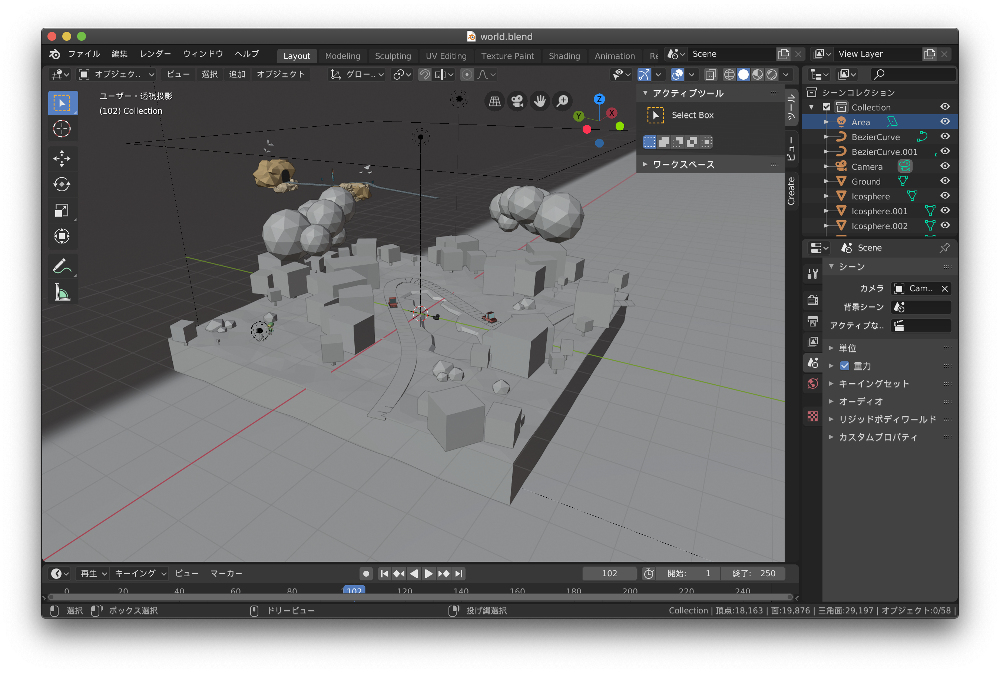
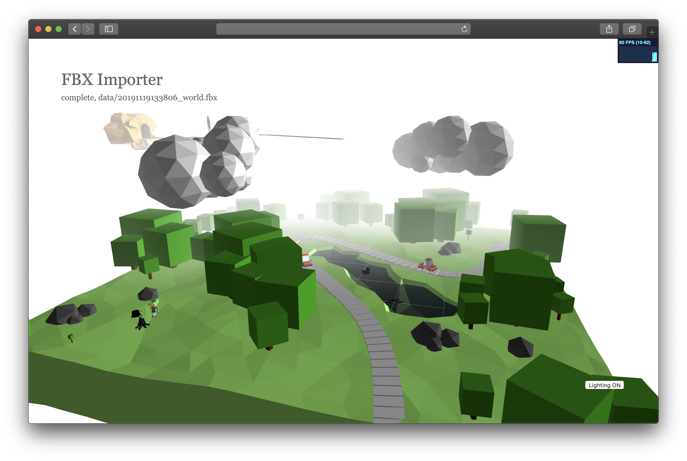
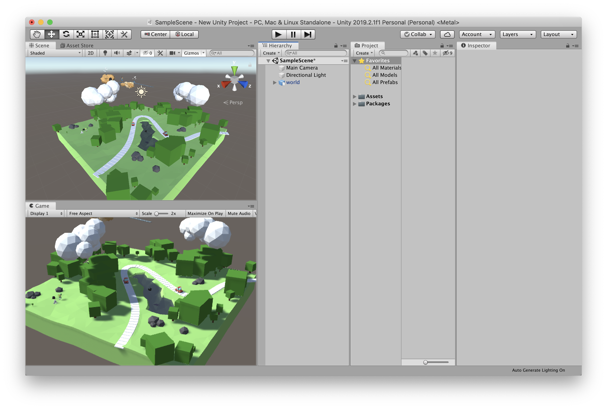

Blenderでのモデリング。アニメーションを入れなければ単純に時間計算で作り込める。
この例だと、一部のモデルはThree.jsを使って生成したのちに、WebGLからObj形式にモデルを変換。
そのモデルをBlenderに読み込ませている。
Blenderでのレンダリング結果。

Blenderからfbx形式でモデルを書き出して、WebGL(Three.js)に読み込み。
読み込み自体は問題ないが、スケール感やライティングの強さなどに意識しないと
実用化が難しいと思われる。（気をつければできる）。

fbxをUnityに直接読み込み。